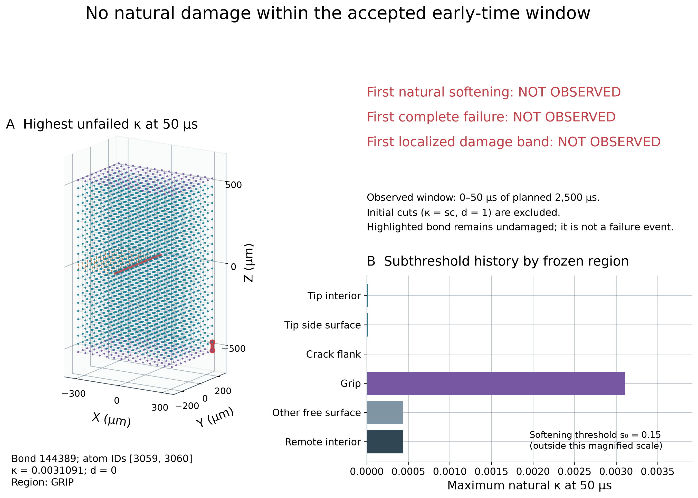
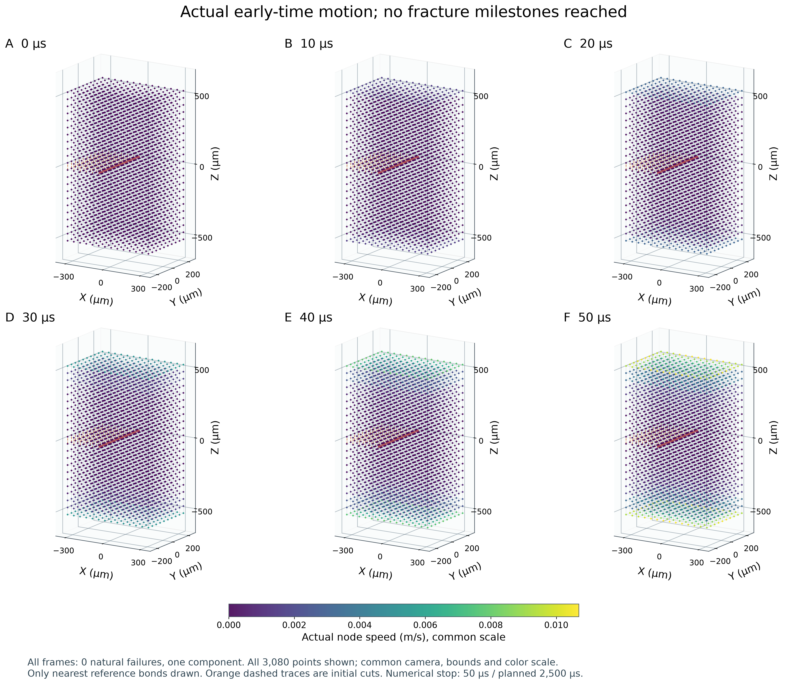
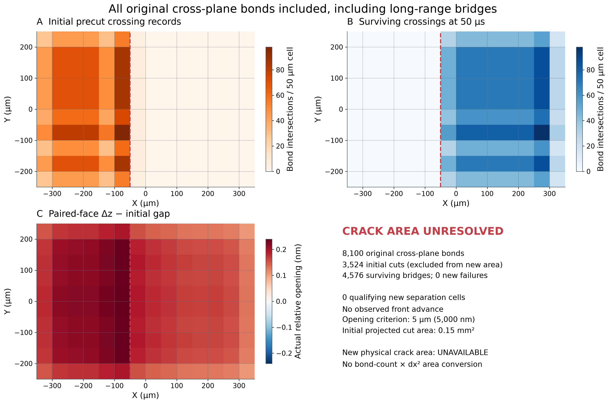
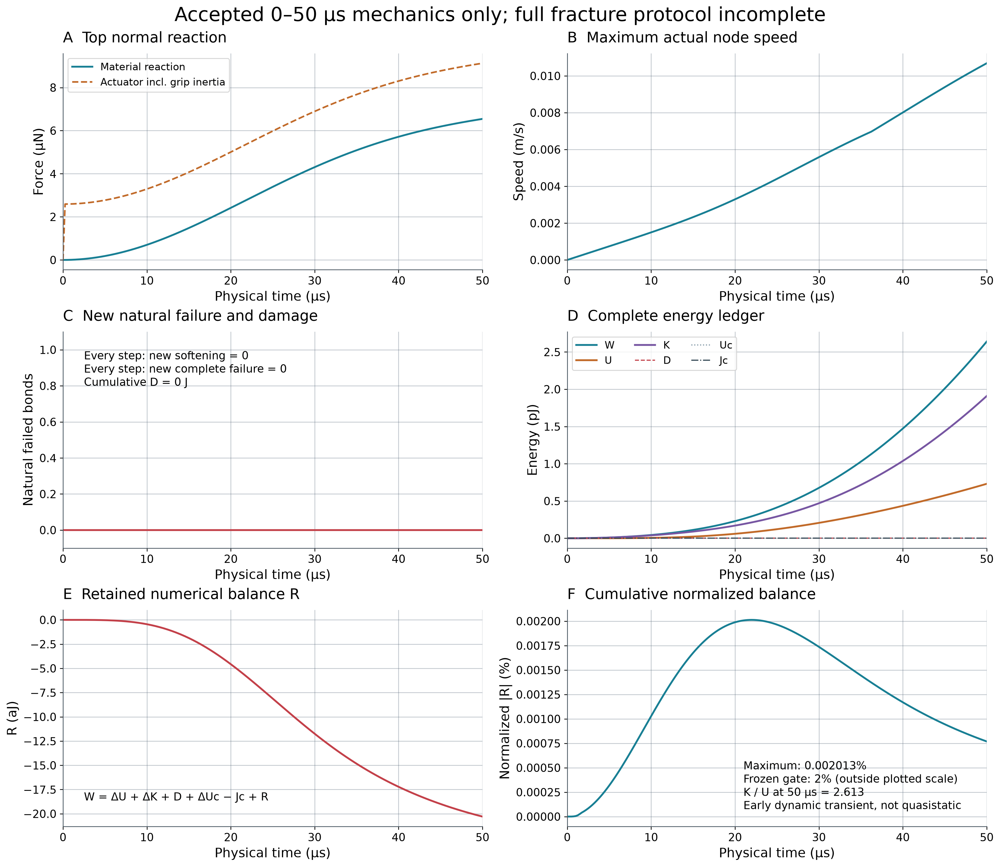
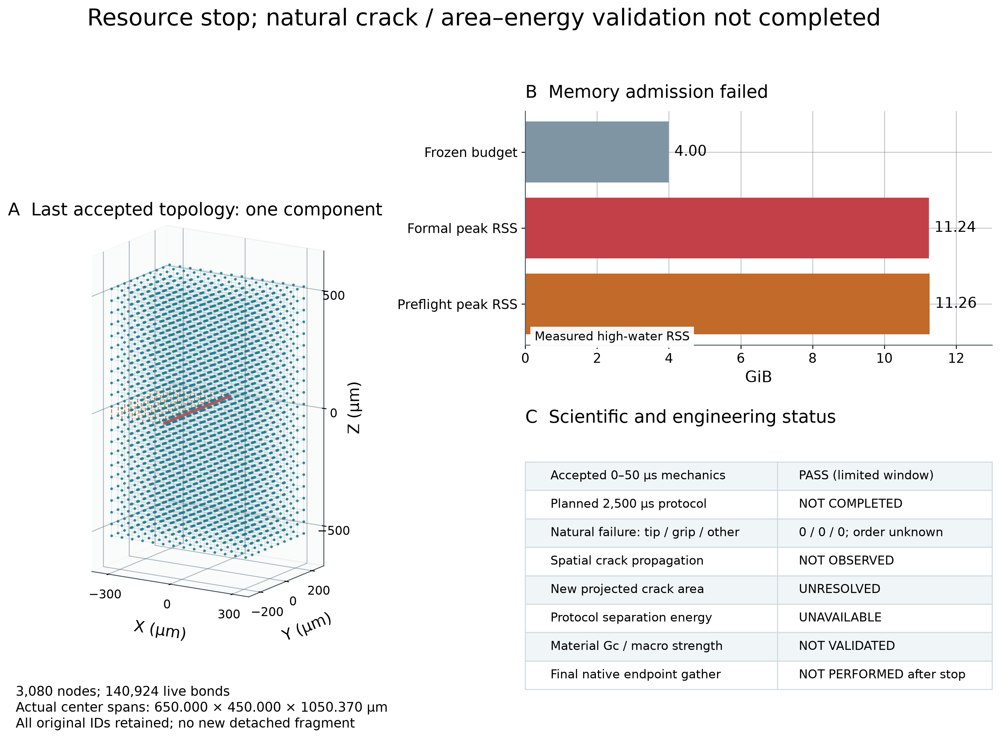

Fig1_actual_specimen

全部3080点，左图仅显示原始最近邻键以便辨认，橙色虚线是已预切的参考记录，不是仍传力的连接。右图显示Y=−25 µm层内全部原始键（包括长键）；统计使用完整144448原始键。半透明矩形只是初始预切几何定义，不是生成的物理裂面。厚度边界和有限horizon效应仍存在。
SVG · PNG 原图3080真实材料点；144448原始键；3524初始预切。仅一次正式路径，200接受步，0拒绝；尚无自然软化或断裂，4576条跨面桥接存活。峰值RSS 11.24 GiB超过冻结4 GiB预算。此结论不能解释为材料不会断裂。
最大归一化能量余额0.002013%，仅认证前50 µs机械计算；新生裂面面积、协议分离耗能、材料Gc均不可用。所有图来自现有FP64数据，无人工裂面，无断裂阶段补画。
全部3080点，左图仅显示原始最近邻键以便辨认，橙色虚线是已预切的参考记录，不是仍传力的连接。右图显示Y=−25 µm层内全部原始键（包括长键）；统计使用完整144448原始键。半透明矩形只是初始预切几何定义，不是生成的物理裂面。厚度边界和有限horizon效应仍存在。
SVG · PNG 原图
本次实际数据中不存在首次软化、首次完全失效或集中损伤事件。显示的是50 µs尚未失效键的最大κ与真实位置、ID、d=0；其位置不能替代首次破坏位置。所有初始预切键均从自然事件统计中排除。
SVG · PNG 原图
使用真实0、10、20、30、40、50 µs六个已保存态；相机、坐标范围和速度色标完全相同，位移无放大。显示全部节点和最近邻键；完整图拓扑使用全部参考键。实际尚未到达首次软化、断裂或传播阶段，不能把这些时间帧称为断裂阶段。
SVG · PNG 原图
按原始线段与z=0的真实交点统计全部8100条跨面键，并非按键中点猜测。3524初始切断、4576仍存活；新增自然失效0。开口为对应上下节点的真实z差减初始50 µm间距，单位nm，未放大成裂缝。网格边界浮点交点采用冻结的floor归属，单元计数纹理不是不对称损伤。没有满足冻结开口与无桥接条件的新生区域；投影新面积不可用，初始0.15 mm²不能用于D/A。
SVG · PNG 原图
全部横轴为真实µs，不是步号；上端材料反力与含夹持规定质量加速度的执行器反力分开。能量单位pJ，余额单位aJ；D、Uc、Jc实际均为0，重合曲线已说明。50 µs时K/U约2.61，不能称准静态。能量通过仅限已接受前缀，不能替代资源或完整协议通过。
SVG · PNG 原图
末个已接受状态仍为3080点单分量。独立全原始图重建与逐步原生存活键数一致，但异常后没有再调用原生末态端点gather；不把未做检查写成端点失配。主程序峰值约11.24 GiB超过4 GiB预算，P1早已约11.26 GiB而资源准入漏检。本轮未完成自然裂纹/面积/耗能验证，不改变前轮341点完整700 µs已通过的基线。
SVG · PNG 原图